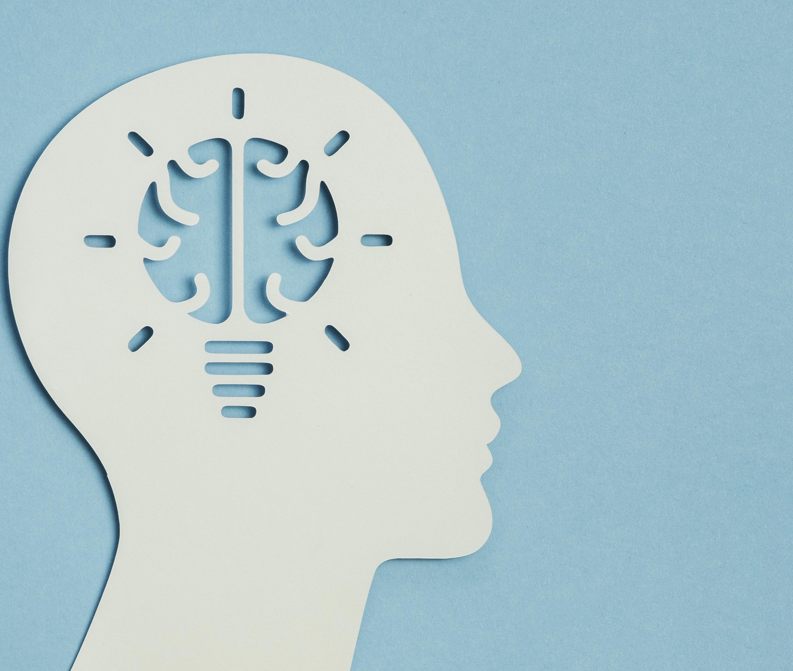

Somos un centro especializado en el tratamiento integral del neurodesarrollo infanto-juvenil.
Equipo Terapéutico somos especialistas en diagnóstico y tratamiento las distintas de patologías del neurodesarrollo.
Ayudamos a niños y adolescentes a potenciar sus habilidades con el fin generar de una vida llena de posibilidades.